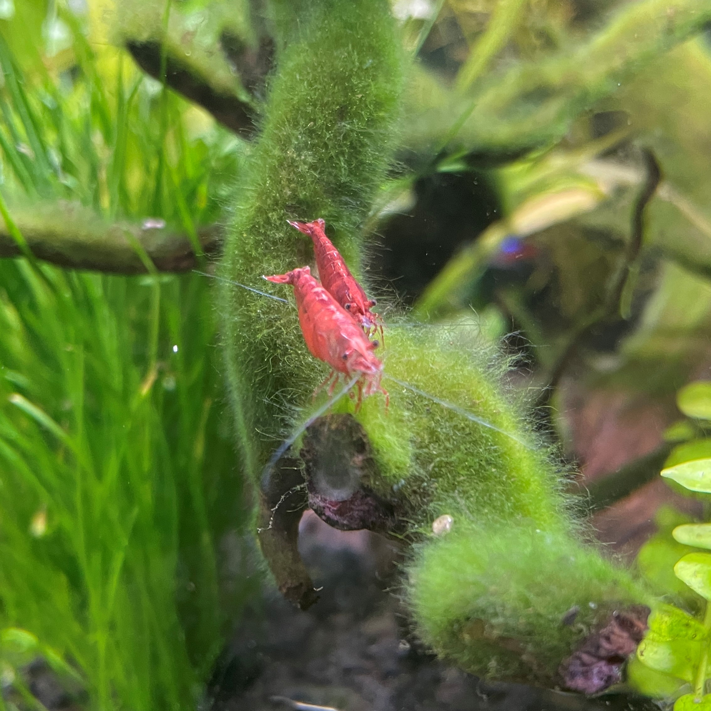

Automated Daily Feeding
(Use military time in hr:min format. e.g. "09:15" or "15:30")
Set Feeding Time
Last set feeding time:
00:00
Manual Control
On
Off
One Cycle
Two Cycles
Three Cycles

Feed us! -Shrimp and Shrimpette